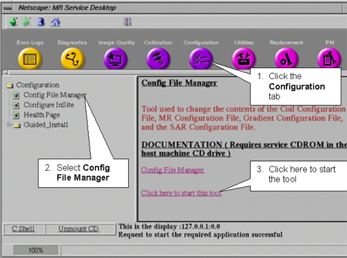
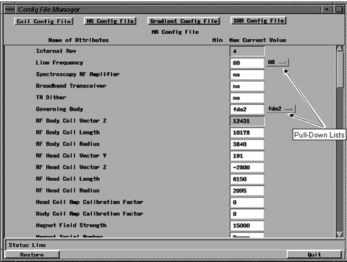

Operating Documentation
Direction 5133315-3, Rev# 14
Signa EXCITE HD 1.5T Service Methods
Module Version 1.0, Version Date 5/15/07
Operating Documentation |
| Required Persons | Preliminary Reqs | Procedure | Finalization |
|---|---|---|---|
| 1 | 0 min | 15 mins | 0 min |
On the Config File Manager screen, select [MR Config File]. See Illustration 1.
Illustration 1: Config File Manager Screen

The MR Config File screen is displayed. See Illustration 2.
Illustration 2: TYPICAL MR CONFIG FILE SCREEN

Either click in the fields or tab through the fields to enter values. For “Attributes” with defined values, click on the pull-down list to the right of the current value. Use the [Delete] key to edit text. The [Backspace] key will delete from the end of the field instead of from where the cursor is located).
| NOTE: | Clicking in a field displays information about the selected field on the Status Line. |
To apply changes to the MR Config File, exit the Config File Manager. Make sure to click the [Save] button when the Save dialog box appears. Then, shut down Signa and reboot the computer. Click here if you need help exiting Config File Manager
No finalization steps.